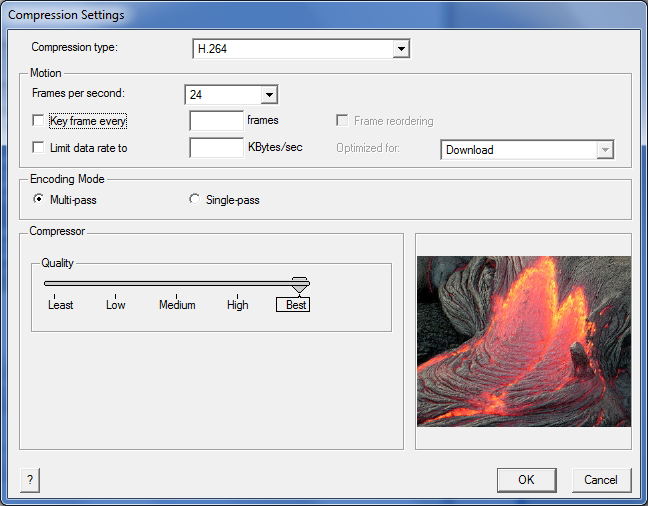

QuickTime MovieWriter Guide
Introduction
Cinder makes writing QuickTime movies a straightforward task via the qtime::MovieWriter class. Creating a basic QuickTime movie is easy, and qtime::MovieWriter also exposes more advanced options which allow you to take full advantage of the features of modern codecs like H.264.
Creating a Simple Movie
To setup an instance of qtime::MovieWriter, we'll need to know two things: the path where we'd like to create the movie, and its dimensions in pixels. As an example, we'll imagine we'd like to create a movie called myMovie.mov and we'd like it saved into our user documents directory. We'll also assume the movie is 640x480 pixels.
#include "cinder/qtime/MovieWriter.h"
#include "cinder/Utilities.h"
using namespace ci;
qtime::MovieWriter movie( getDocumentsDirectory() + "myMovie.mov", 640, 480 );
Because we have not specified any additional parameters, the qtime::MovieWriter defaults to using a PNG codec, and will run at 30 frames per second. Now let's imagine we have a rendering loop which will create an animation 100 frames long. We'll assume we have a routine called renderFrame() which has a parameter for providing which frame we need, and it returns a Surface. Continuing where we left off, here's how we might put the qtime::MovieWriter to use:
Surface renderFrame( int frame ); // defined elsewhere
for( int frame = 0; frame < 100; ++frame ) {
movie.addFrame( renderFrame( frame ) );
}
For the basic use case, that's all there is to it - we simply call addFrame() with our Surface inside the loop. When the qtime::MovieWriter goes out of scope, it will save all its frames to disk. Alternatively, to explicitly force the qtime::MovieWriter to save, call finish():
movie.finish();
Specifying Formats
The qtime::MovieWriter class offers extensive options for customizing the format of its output, and this can be done using the qtime::MovieWriter::Format class. Here's an example of how to modify the codec to be JPEG and the quality to 50%:
qtime::MovieWriter::Format format;
format.setCodec( qtime::MovieWriter::CODEC_JPEG );
format.setQuality( 0.5f );
qtime::MovieWriter movie( getDocumentsDirectory() + "myMovie.mov", 640, 480, format );
The first call, setCodec(), allows users to provide a constant from among several defined for popular codecs or the four character identifier as specified by QuickTime in its header file ImageCompression.h. The second call, setQuality() allows the specification of a level of quality ranging from the lowest, 0.0 to the highest, 1.0 (which for some codecs is lossless). The qtime::MovieWriter::Format class also allows the chaining of several calls as a convenience, which looks like this:
qtime::MovieWriter movie( getDocumentsDirectory() + "myMovie.mov",
640, 480, qtime::MovieWriter::Format().setCodec( 'png ' ).setQuality( 0.95f ) );
MultiPass Encoding
The documentation for qtime::MovieWriter::Format provides a more thorough list of its options, but a key principle is that the default settings will achieve the best possible quality with one exception: multiPass encoding is not enabled by default. This is a technique which allows QuickTime to make several passes over the frames' data, and can result in much higher quality output. At the time of this writing, only the H.264 codec can make use of the technique. However this is not enabled by default because it can result in a lengthy postprocessing phase, and it requires the creation of two temporary files. The first of these files QuickTime creates for its own purposes, and the second qtime::MovieWriter makes to store temporary copies of all frames supplied by calls to addFrame(). However all of this is handled automatically when multiPass encoding is enabled via qtime::MovieWriter::Format::enableMultiPass().
User Compression Options
QuickTime provides a standard user interface for specifying encoding options, and Cinder makes this available via the qtime::MovieWriter::getUserCompressionSettings function. This function can be used to populate a qtime::MovieWriter::Format instance. Also note that the resulting instance may contain additional settings that qtime::MovieWriter::Format does not provide direct functions for manipulating. An optional parameter allows the specification of a preview image for the dialog.
Surface previewImage( loadImage( loadResource( RES_PREVIEW_IMAGE ) ) );
qtime::MovieWriter::Format format;
if( qtime::MovieWriter::getUserCompressionSettings( &format, previewImage ) ) {
mMovieWriter = qtime::MovieWriter( path, getWindowWidth(), getWindowHeight(), format );
}

Issues
There are a couple of known issues we're still looking into in the qtime::MovieWriter class. The first is that there is a visible gamma shift (things get brighter and desaturated) with certain codecs, including H.264. This seems to be a pervasive problem with QuickTime, and one which video encoding even with Apple's own QuickTime Player suffers from. There are numerous discussions of the issue on the internet, and we have yet to find a solution, unfortunately.
Also currently qtime::MovieWriter does not support audio exporting, and this will be introduced in future revisions.